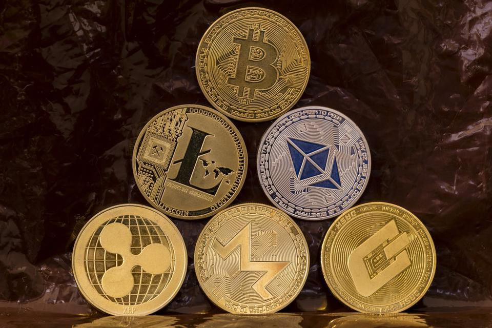
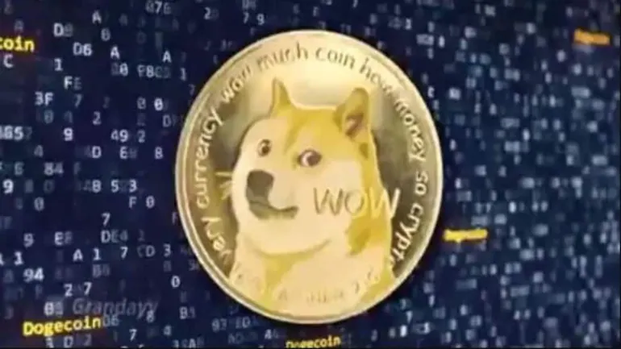

Dogecoin – Rise of Meme coin
Dogecoin is right now a trending crypto capturing the world of crypto currencies, its name is inspired by a famous meme character Doge

This crypto was founded by Billy Markus and Jackson Palmer, who decided to create a payment system that is free from traditional banking fee. The co-founder of dogecoin Billy Markus sold all his crypto in 2015 to buy a Honda Civic, now the market of dogecoin is greater than Honda. Right now, around the world thousands of miners are mining this crypto and trying their best to make the price of 1 doge coin to 1 dollar.
Reason of Success
Many miners were saying that mining of doge coin is quite easy. The other reason of success of this crypto is the reaction of Elon Musk – CEO of Tesla. Elon and his company are responsible for the success of Bitcoin so many investors thought that doge coin can be the next crypto to go on moon (Price rise).
Current Price Rise
As of 4 May 2020, the price of dogecoin is rising significantly resulting in crashing of many crypto trading apps. On 4 May dogecoin reached the new height and many famous crypto trading apps included doge coin on their portal for trading. Another big thing for dogecoin investors is that amazon is considering dogecoin to include in its payment gateway and many tech giants from Europe and USA are thinking of investing in Dogecoin as Tesla invested in Bitcoin It is expected that market of dogecoin will grow rapidly and it will perform much better than other peer coins as many investors are investing in this crypto.
Top apps to invest in dogecoin
- WazirX
- Coinswitch
- Coin CDX
For Beginners
Before investing in any crypto you must know that crypto does not depend on any market it totally depends on miners and investments. Price of any crypto can drop anytime so you must invest in limits and first invest small amount to understand things clearly moreover basic knowledge of blockchain can help you understand thing better.
Is Crypto Safe
Crypto is safe as every transaction of crypto is secured and open moreover the best part of blockchain(the principle on which crypto works) is any code deployed on blockchain hosting platform cannot be changed moreover no organisation is controlling crypto currencies so it is safe from corruption.
